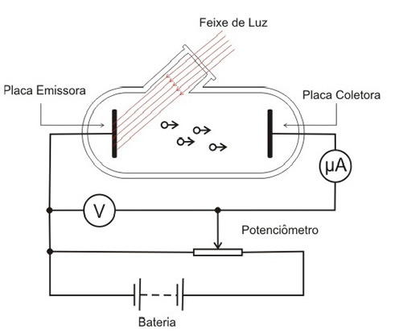

Sumário
Efeito fotoelétrico
Introdução
Efeito fotoelétrico é o fenômeno no qual ocorre a emissão de
elétrons de uma superfície metálica ao ser exposta à radiação eletromagnética.O efeito
fotoelétrico é um bom exemplo da incompatibilidade dos resultados experimentais com a
teoria eletromagnética proposta por Maxwell.
Contextualizando
Heinrich Hertz foi um dos primeiros cientistas a observar esse fenômeno.
Ele utilizou um dispositivo que gerava faíscas, constituído por dois circuitos:
um para gerar ondas e outro para detectá-las. Hertz verificou que as faíscas da
placa geradora produziam faíscas na placa receptora. Após observações, concluiu que
a luz era capaz de gerar faíscas e que o fenômeno era observado apenas com a luz
ultravioleta.
Este experimento serviu para confirmar a existência das ondas eletromagnéticas e a
teoria de Maxwell sobre a propagação da luz. A novidade foi o efeito da luz
ultravioleta na descarga elétrica, visto que esse fato ainda não tinha explicação.
Em 1889, Wilhelm Hallwachs observou que, ao serem iluminadas com radiação
ultravioleta, algumas superfícies metálicas, ejetam partículas de carga negativa.
Philipp von Lenard, assim como Thomson, mediu a relação carga e massa das mesmas
(partículas ejetadas) e deduziu que o aumento de faíscas que Hertz havia observado
era resultado da emissão de elétrons, aos quais deu o nome de fotoelétrons.
Na figura abaixo, tem-se a ilustração de um aparelho que possibilita observarmos o efeito fotoelétrico:

Certa luz com frequência f ilumina uma superfície metálica no interior de um tubo mantido
a vácuo, e elétrons são emitidos dessa superfície. As duas placas são mantidas a uma
diferença de potencial V. Caso os elétrons emitidos possuam energia suficiente para
atingir o coletor, serão capturados, e isso será observado na forma de uma corrente
elétrica i, que é registrada no amperímetro A. A frequência f, a intensidade I da luz, a
diferença de potencial V e o material do emissor podem variar.
Os resultados são:
- A corrente elétrica medida no amperímetro surge quase instantaneamente ao processo de iluminação da superfície emissora, mesmo que a luz incidente tenha baixa intensidade. O atraso entre o tempo de iluminação e o surgimento da corrente elétrica é da ordem de 10-9 s e independe da intensidade da luz incidente.
- Se fixarmos a frequência e a ddp, a corrente elétrica será diretamente proporcional à intensidade da luz incidente.
- Se fixarmos a frequência e a intensidade da luz incidente, a corrente irá decrescer à medida que a ddp aumentar. A corrente elétrica cessa para determinado valor de V, denominado potencial elétrico de frenagem ou potencial elétrico de corte, V_0, que independe da intensidade da luz incidente.
-
Para certo material emissor, o potencial de frenagem varia linearmente com a
frequência, de acordo com a equação: eV_0 = hf - ew_0
Onde w_0 é uma constante denominada função trabalho, sendo, portanto, função do material. Lembrando que h é a constante de Planck, h = 6,63x10^{-34} Js, e é a carga do elétron (e = 1,6x10^{-19} C). - Para cada material, existe uma frequência de corte ou limiar de frequência, abaixo da qual os elétrons não são emitidos, não importando a intensidade da luz incidente.
RESUMÃO
Chegou a hora de fazer o Resumão! Para isso, aqui vão algumas dicas para você fazer o seu de forma completa e saber tudo sobre o Efeito Fotoelétrico:
- Lembre-se que a radiação eletromagnética pode retirar elétrons do material a qual ela incidiu
Refêrencias